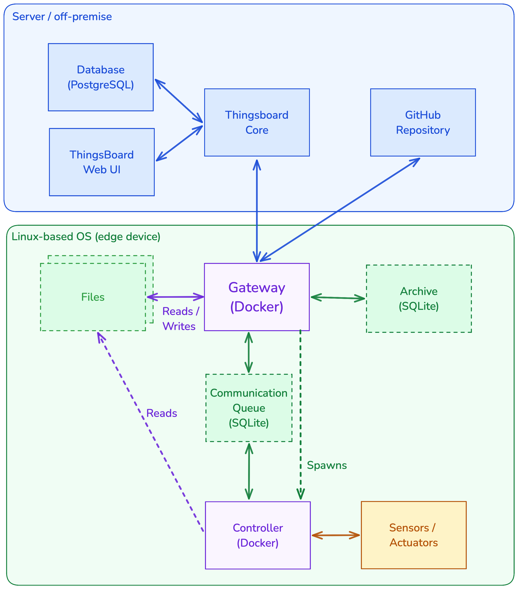

Data Flows¶
{kind=link}

Several data flows involve the TEG-Gateway as the central component:
Device Data Flow
Data collected by the Controller via sensors/actuators/logs is provided to the TEG-gateway via an sqlite database. This database serves as a buffer between data generated by the controller and message forwarding to ThingsBoard by the gateway. The independent database also ensures data persistence in case of power outages or bugs/crashes.
ThingsBoard Data Flow
The TEG-Gateway both receives and sends data to/from the ThingsBoard server via MQTT. Received MQTT messages include RPC commands, OTA Software update version information as well as file definitions/content via shared ThingsBoard attributes. The TEG-gateway publishes all messages received from the controller to ThingsBoard via this MQTT channel, along with its own log messages / metadata. MQTT is also used for device provisioning during initial setup.
Git repository Data Flow (OTA Updates)
To perform over-the-air (OTA) software updates on the controller, the TEG-gateway fetches commits in a local git repository from the configured git remote server. Once fetched, the commits/tags are searched for a match with the desired version and the corresponding commit is checked out locally and used for building a new controller Docker image. Updates are triggered and managed through the ThingsBoard Web UI.
See Remote Software Update for details.
Local file read/write data flow
The TEG-Gateway enables remote file management on its host device’s local file system. Using ThingsBoard Shared Attributes users can define files to be either read-only or read/write, as well as what content should be written to them.
See Remote File Management for details.